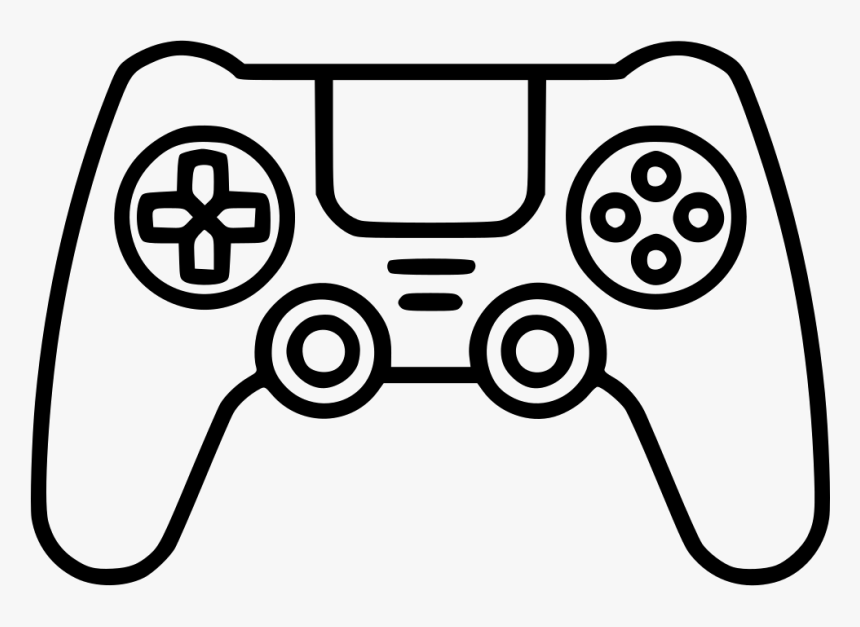
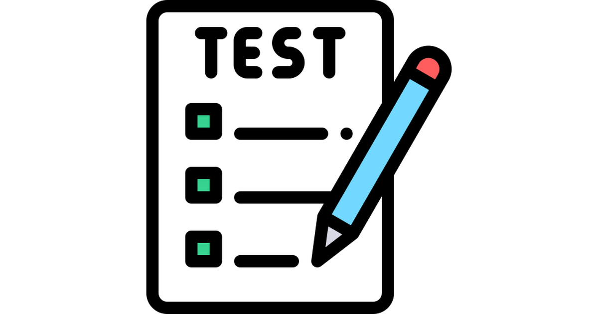

Обучающая игра
Человек кликает по карточкам и узнаёт новые слова на английском. Игра включает в себя различные уровни сложности, чтобы каждый мог найти подходящий для себя.

Проверка знаний
Нажимая на карточку, можно увидеть перевод слова и запомнить его. Также есть возможность пройти тесты, чтобы проверить свои знания.
Словарь
В словаре можно записывать слова, которые вам не известны, и наоборот, то есть выученные слова. Вы можете добавлять примеры использования слов в предложениях, чтобы лучше их запомнить.